1. 화면·데이터 모델·API 연결의 의미
화면은 현장 사용자가 보고·입력·승인·실행하는 접점이고, 데이터 모델은 객체·속성·관계·상태·이벤트·규칙·행동을 저장하는 구조이며, API는 화면·데이터·AI Agent·워크플로·외부 시스템을 연결하는 통로입니다.
화면은 사용자의 행동을 만들고, 데이터 모델은 현장의 구조를 저장하며, API는 AI 판단과 업무 실행을 연결합니다.
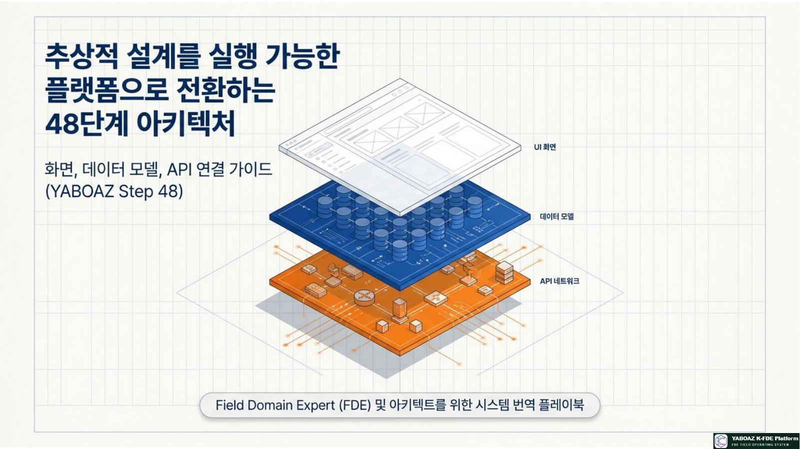
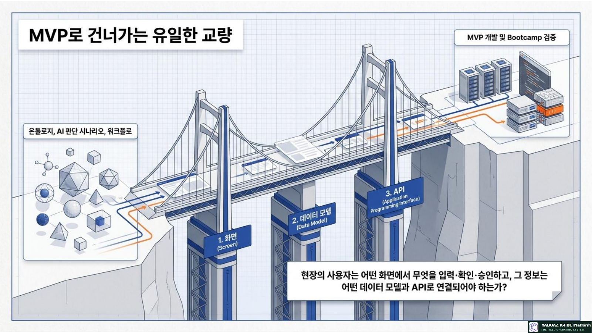
2. 10단계의 위치와 핵심 산출물
10\uB2E8\uACC4는 MVP 개발 직전의 실행 설계 단계입니다. 화면·데이터·API가 정리되어야 11단계 개발이 기능 목록이 아니라 구현 가능한 업무 플랫폼으로 이어집니다.
핵심 산출물
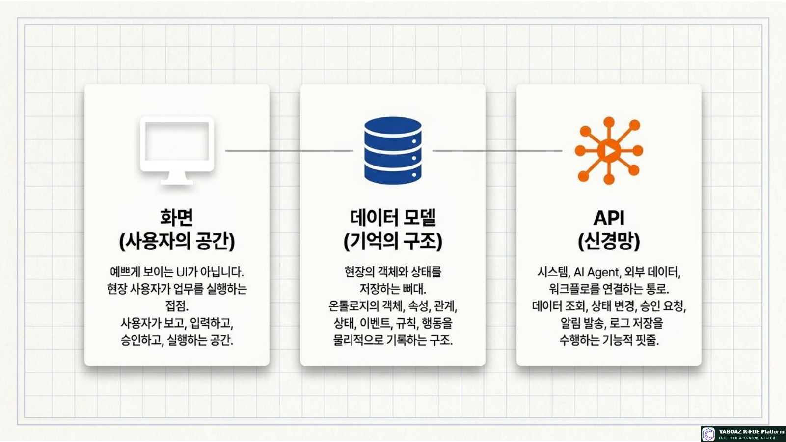
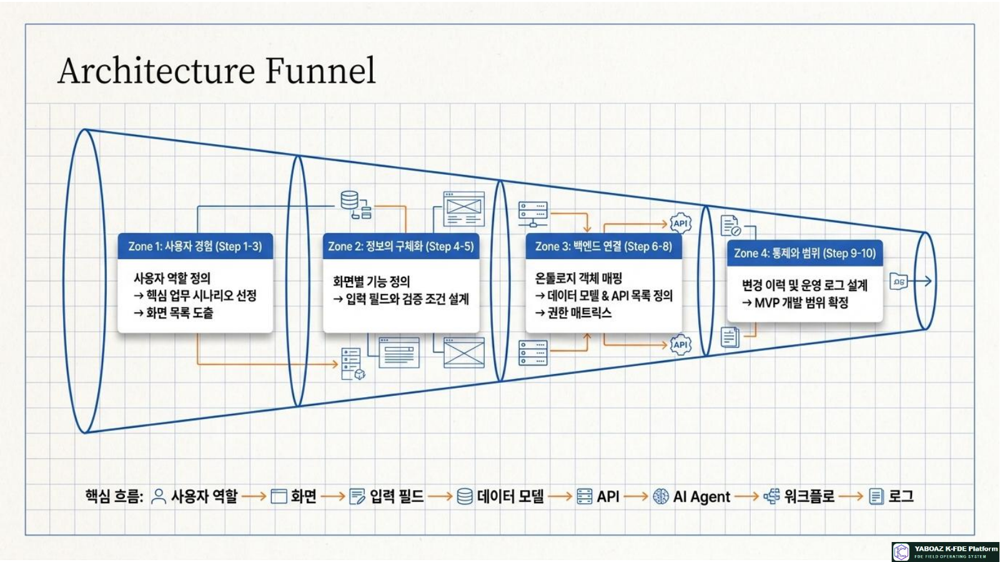
3. 설계 전체 흐름 10단계
사용자 역할 정의
관리자·현장 담당자·승인자·일반 사용자·시스템 관리자의 목적과 권한을 구분합니다.
핵심 업무 시나리오 선정
문제 중요도·반복성·실행·데이터·승인·KPI·MVP 가능성을 기준으로 선정합니다.
화면 목록 도출
이벤트·AI 추천·승인·알림·로그·KPI 등 업무 흐름에서 화면을 도출합니다.
화면별 기능 정의
무엇을 보여주고, 무엇을 입력하며, 어떤 행동을 실행하는지 작성합니다.
입력 필드·검증 정의
타입·필수·범위·기본값·금지어·출처·수정 권한·이력을 정의합니다.
온톨로지와 데이터 모델 연결
객체·속성·관계·상태·이벤트를 저장 가능한 테이블과 관계로 전환합니다.
API 목록·입출력 정의
조회·생성·수정·판단·승인·실행·로그·KPI·외부 연동 API를 설계합니다.
권한별 화면·기능 제한
역할별 접근 화면과 조회·작성·승인·실행·감사 권한을 제한합니다.
변경 이력·운영 로그 설계
사용자 행동·AI 판단·승인·실행·오류·보안 로그와 변경 전후 값을 기록합니다.
MVP 개발 범위 확정
핵심 문제 해결, 데이터 준비, 구현 가능성, Bootcamp 검증, KPI·자산화를 기준으로 확정합니다.
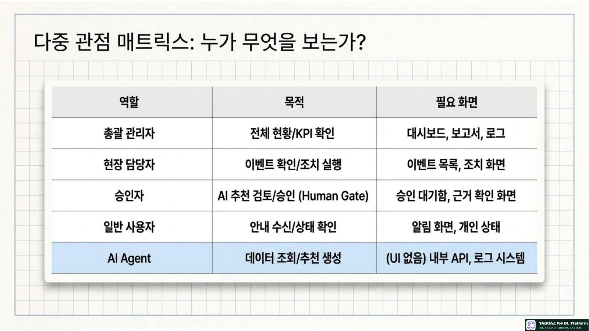
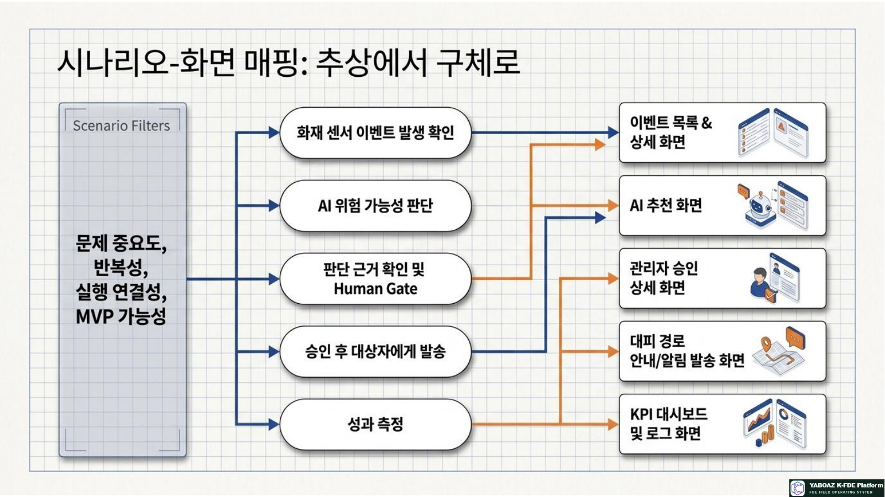
4. 사용자 역할·업무 시나리오·화면 목록
사용자 역할
| 역할 | 목적 | 필요 화면 |
|---|---|---|
| 총괄 관리자 | 전체 현황·KPI 확인 | 대시보드·보고서·로그 |
| 현장 담당자 | 이벤트 확인·조치 실행 | 이벤트 목록·상세·조치 |
| 승인자 | AI 추천 검토·승인 | 승인 대기함·승인 상세 |
| 시스템 관리자 | 데이터·권한·API 관리 | 설정·권한·연동 관리 |
| 일반 사용자 | 안내 수신·상태 확인 | 알림·개인 상태 |
FireNavi MVP 핵심 시나리오
| 시나리오 | 설명 | 핵심 화면 |
|---|---|---|
| 센서 알림 확인 | 화재 이벤트와 위치 확인 | 이벤트 목록·상세 |
| 위험도 AI 추천 | AI 판단·근거·신뢰도 확인 | AI 추천 화면 |
| 관리자 승인 | 승인·반려·수정·보류 | 승인 대기함·상세 |
| 대피 경로 안내 | 승인 후 대상자에게 안내 | 알림 발송 화면 |
| 실행·KPI 확인 | 로그와 대응성과 확인 | 로그·KPI 대시보드 |
기본 화면 목록
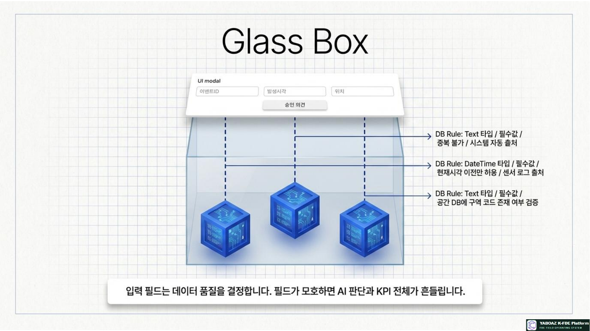
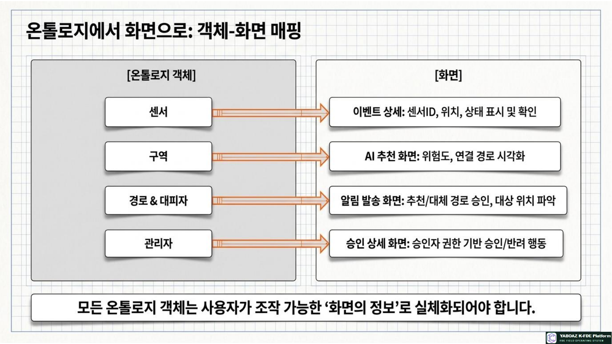
5. 화면 기능·입력 필드·객체 매핑
화면 기능 정의표
| 화면 | 보여줄 정보 | 입력 | 실행 행동 |
|---|---|---|---|
| 이벤트 목록 | ID·발생시각·상태·위험도 | 검색·필터 | 상세 보기 |
| 이벤트 상세 | Evidence·센서·위치·상태 | 담당자 메모 | AI 판단 요청 |
| AI 추천 | 결과·근거·신뢰도·대안 | 검토 의견 | 승인 요청 |
| 승인 상세 | 추천 행동·영향 대상·리스크 | 승인 사유 | 승인·반려·보류 |
| 알림 발송 | 대상·경로·메시지 | 메시지 수정 | 발송 |
| KPI 대시보드 | 처리시간·승인률·오류율 | 기간 필터 | 리포트 생성 |
입력 필드 정의표
| 화면 | 필드 | 타입·필수 | 검증 조건 | 출처 |
|---|---|---|---|---|
| 이벤트 등록 | 이벤트ID | Text·필수 | 중복 불가 | 시스템 자동 |
| 이벤트 등록 | 발생시각 | DateTime·필수 | 현재시각 이전 | 센서 로그 |
| 이벤트 상세 | 위치 | Text·필수 | 구역 코드 존재 | 공간 DB |
| 승인 상세 | 승인 의견 | Text·선택 | 500자 이내 | 사용자 입력 |
| 알림 발송 | 메시지 | Text·필수 | 금지어·대상 검증 | AI 초안+수정 |
객체-화면 매핑
| 객체 | 관련 화면 | 표시 정보 | 사용자 행동 |
|---|---|---|---|
| 센서 | 이벤트 상세 | ID·위치·상태 | 상태 확인 |
| 구역 | AI 추천 | 위험도·경로 | 위험 구역 확인 |
| 경로 | 알림 발송 | 추천·대체 경로 | 경로 승인 |
| 관리자 | 승인 상세 | 승인자·권한 | 승인·반려 |
| 대피자·알림 | 알림·로그 | 대상·발송·수신 상태 | 결과 확인 |
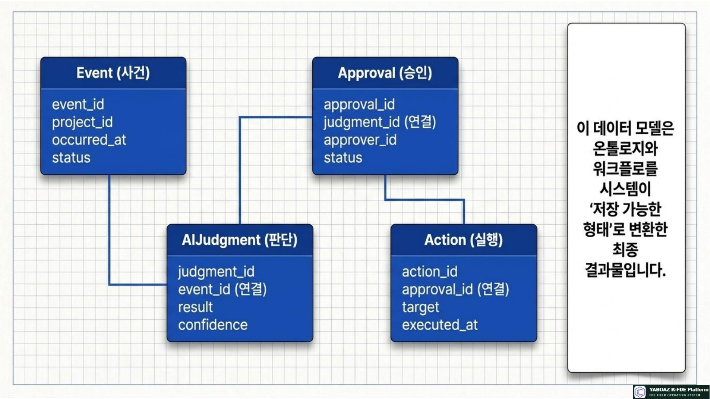
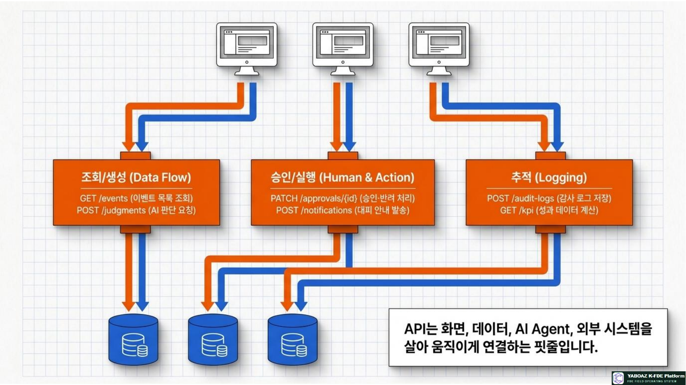
6. 데이터 모델 설계
데이터 모델은 온톨로지와 워크플로를 저장 가능한 구조로 바꾸는 설계입니다. 모든 판단과 행동은 프로젝트·사용자·이벤트·Agent·승인·로그·KPI와 연결되어야 합니다.
| 테이블·객체 | 역할 | 핵심 필드 예시 |
|---|---|---|
| Project | 프로젝트 기본정보 | project_id, name, status, owner_id |
| User·Role | 사용자·권한 | user_id, role_id, permissions |
| Evidence | 증거 카드 | evidence_id, source, confidence, status |
| ObjectEntity·Attribute | 온톨로지 객체·속성 | object_id, type, key, value |
| Relationship·State | 관계·상태 | source_id, relation, target_id, state |
| Event | 발생 이벤트 | event_id, type, source, occurred_at, status |
| Rule·Action | 판단 규칙·행동 | rule_id, condition, action_type |
| Agent·AIJudgment | Agent 사양·판단 결과 | agent_id, result, confidence, evidence_ids |
| Workflow·Approval | 워크플로·승인 | workflow_id, state, approver_id, status |
| Notification·AuditLog·KPI | 발송·감사·성과 | target, action, timestamp, metric |
핵심 실행 모델 예시
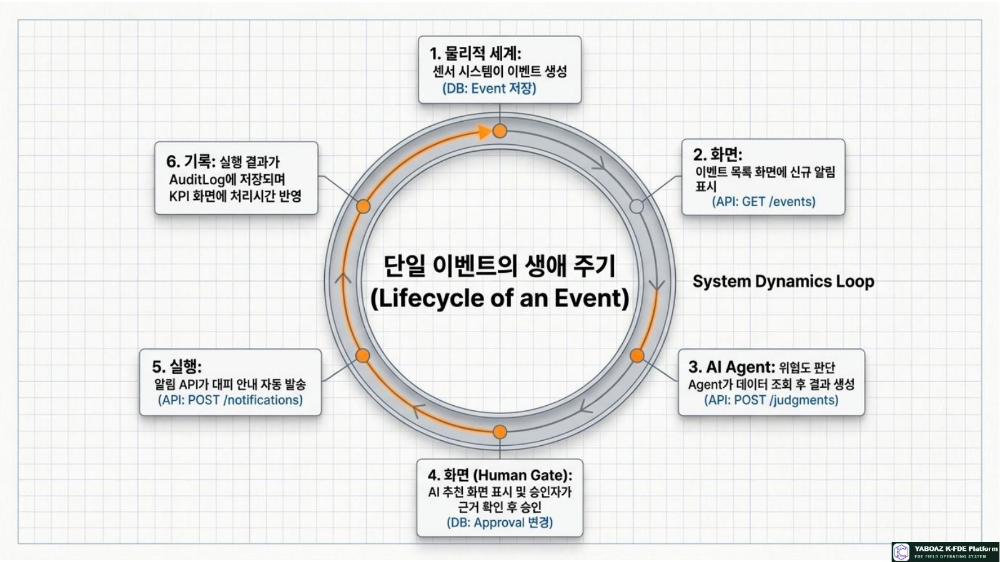
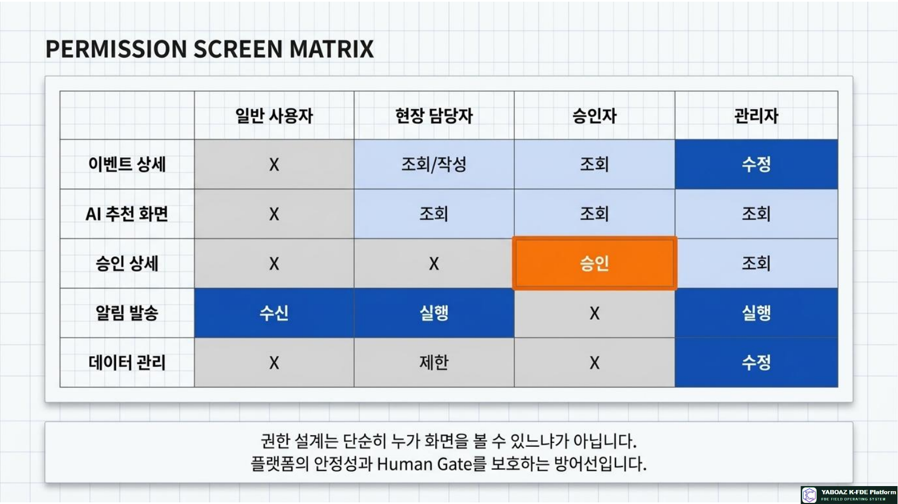
7. API·데이터 흐름 설계
API 정의표
| API | Method | 목적 | 입력 | 출력 |
|---|---|---|---|---|
| /events | GET | 이벤트 목록 조회 | project_id·status | 이벤트 목록 |
| /events/{id} | GET | 이벤트 상세 조회 | event_id | 상세·Evidence |
| /judgments | POST | AI 판단 요청 | event_id·agent_id | 판단·근거·신뢰도 |
| /approvals | POST | 승인 요청 생성 | judgment_id·approver_id | approval_id |
| /approvals/{id} | PATCH | 승인 처리 | status·comment | 처리 결과 |
| /notifications | POST | 알림 발송 | target_ids·message | 발송 결과 |
| /audit-logs | POST | 감사 로그 저장 | actor·action·metadata | log_id |
| /kpi | GET | KPI 조회 | project_id·period | KPI 결과 |
FireNavi 데이터 흐름
| 순서 | 흐름 | 기록 |
|---|---|---|
| 1 | 센서가 신규 이벤트를 생성합니다. | Event·AuditLog |
| 2 | 화면이 이벤트와 관련 Evidence를 조회합니다. | 사용자 조회 로그 |
| 3 | 위험도 판단 Agent가 데이터와 규칙을 사용합니다. | AIJudgment |
| 4 | 승인자가 근거를 확인하고 승인·반려합니다. | Approval |
| 5 | 승인 후 알림 API가 대피 안내를 발송합니다. | Notification·Action |
| 6 | 처리시간·성공률이 KPI에 반영됩니다. | KPIRecord |
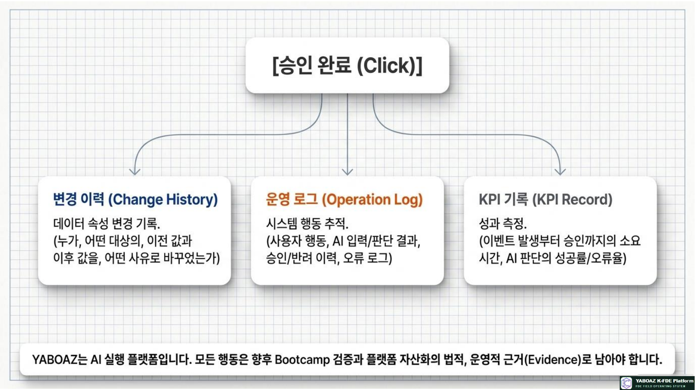
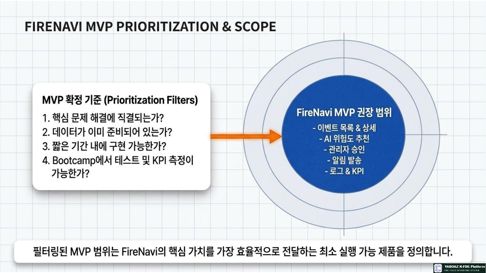
8. 권한·변경 이력·MVP·실습
권한별 화면 매트릭스
| 화면 | 일반 사용자 | 현장 담당자 | 승인자 | 관리자 | 감사자 |
|---|---|---|---|---|---|
| 이벤트 목록·상세 | 제한 | 조회·작성 | 조회 | 조회·수정 | 조회 |
| AI 추천 | X | 조회 | 조회 | 조회 | 조회 |
| 승인 상세 | X | X | 승인 | 승인 | 조회 |
| 알림 발송 | 수신 | 실행 | 승인 후 실행 | 실행 | 조회 |
| 데이터·설정 | X | 제한 | X | 수정 | 조회 |
| 로그·KPI | X | 제한 | 조회 | 조회 | 감사 조회 |
변경 이력 필드
| 필드 | 설명 | 대상 예시 |
|---|---|---|
| change_id | 변경 식별자 | 변경 건별 ID |
| target_type·target_id | 변경 대상 | 규칙·승인 조건·알림 |
| before_value·after_value | 변경 전후 값 | 상태·메시지·권한 |
| changed_by·changed_at | 변경자와 시각 | 사용자·시스템 |
| reason | 변경 사유 | 운영 개선·오류 수정 |
FireNavi MVP 권장 범위
10단계 완료 체크리스트
설계된 온톨로지·AI Agent·워크플로를 실제 사용자가 조작할 수 있는 화면, 시스템이 저장할 수 있는 데이터, 안전하게 연결되는 API 계약으로 전환하는 것입니다.
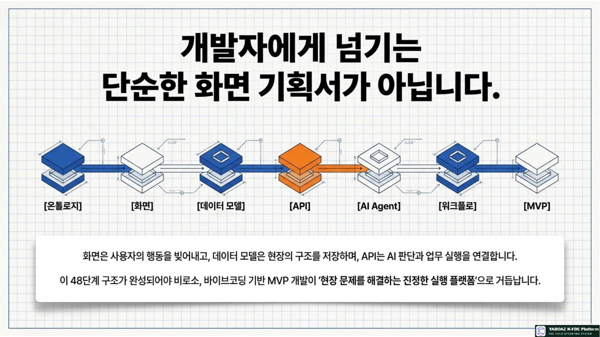